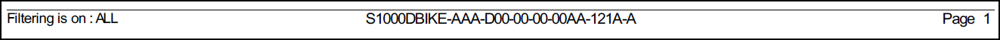

Not applicable for Pinpoint Standalone Light.
- Customized Header/Footer
You can configure a customized header and footer to appear on your printed documents. The default Header.html and Footer.html files are included with your installation. You can copy and edit the default files to add your customizations when printing. Administrators, refer to "Configuring a Customized Header/Footer for Printed Documents" in the Flatirons Pinpoint Configuration Guide.
These are examples of a default header/footer:
Default Header

Default Footer
These are examples of a custom header/footer:
Custom Header

Custom Footer
You can configure a proprietary header and footer to appear on your printed documents. Like the process for creating a customized header and footer, you can copy and edit the default files to add the proprietary information. When enabled, you can apply a proprietary header or footer to a publication by selecting the Default metadata kit from the Metadata Kit drop-down menu.
Refer to "Enabling Proprietary Messages for Metadata" and "Configuring a Proprietary Message in Header/Footer for Printed Documents" in the Flatirons Pinpoint Configuration Guide.Note: This feature is currently enabled for the iSpec 2200 builder (all pub types), S1000D builder (all revisions, pub types), and the KCA builder.This is an example of a proprietary footer:

Proprietary Footer
- Revision/COC Bars
If configured, the document is printed with Revision/COC bars that marks new/modified content. How this revision marking is displayed depends on the revision mark configuration set up by your administrator. Administrators, refer to "Revision Bar Configuration" in the Flatirons Pinpoint Configuration Guide.
- Font Size
By default, the font size for printing a PDF is 10pt. Your administrator can change the font size used when printing a PDF. Administrators, refer to "Print to PDF Parameters" in the Flatirons Pinpoint Configuration Guide.
- Print Option for Embedded References
If configured to print, the Embedded References checkbox is available on the Print Options dialog. If not configured or set to false, the option is not available. A message displays to users to print the embedded reference separately. Administrators, refer to "Configuring the Print Option for Embedded References" in the Flatirons Pinpoint Configuration Guide.